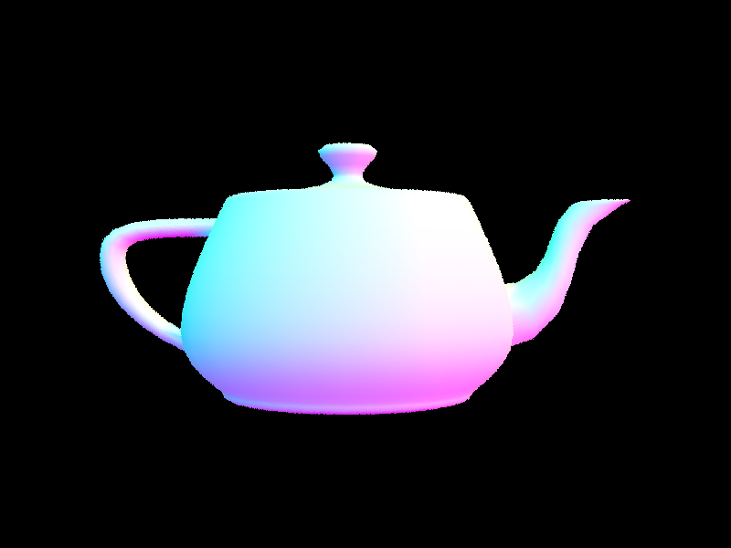
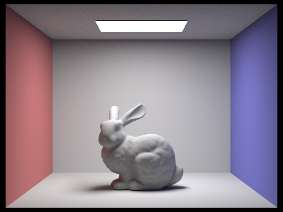

OVERVIEW :
This project allowed us to understand how to develop and optimize path tracing: a technique used to simulate the way light interacts with objects in order to create realistic images. The project is broken into parts that address different parts of the rendering pipeline. Throughout this project, as we advance through the parts, we see the rendered products become more realistic, and after optimization we see increases in render time as well.
Part 1 is mainly about foundational parts of the pipeline: ray generation and intersection. This section helped us more deeply understand how rays are generated based on the camera’s fov and also to understand primitive intersection algorithms. We began by creating rays from the camera through each pixel in the image plane which involved calculating sensor plane coordinates from image coordinates, and transforming these from camera space to world space. We then develop intersection algorithms. The hardest part of this part was understanding what formula and conversions to use to generate the ray. We addressed this issue by going to office hours and homework parties to get a better conceptual understanding
In part 2 we developed a bounding volume hierarchy: a technique used to optimize the rendering process by organizing the geometry of a scene in a hierarchical way that minimizes the number of necessary ray primitive intersection tests. We used a midpoint splitting heuristic and a recursive constructive algorithm. The hardest part of this section was the constructor as we continually got seg-faults. We again addressed this issue by going to homework parties where we learned we could use in place sort which got rid of our indexing problems.
In part 3, we develop two types of direct lighting: uniform hemisphere sampling and importance sampling. These functions attempt to most accurately estimate the direct illumination effects from a light source. We first implemented direct lighting by uniformly sampling directions over a hemisphere centered at the point of intersection. Then we move on to importance sampling which involves iterating over light sources and calculating the contribution of each to the lighting at a point. The most challenging part of this part was a small bug where we used the ray constructor incorrectly. We found this bug by getting help at office hours.
In part 4, we develop the ability for the pipeline to add indirect lighting and global illumination to our scenes. This gave our images higher levels of realism. We use recursion accumulating one bounce radiance estimate for each sampled bounce of a ray, until we have accumulated a max ray depth number of illumination estimates. We also make sure to add zero bounce randiace to the sum total. The most challenging aspect was making sure we conceptually understand how to approach the recursion, we worked this out by conceptualizing and discussing before implementing.
in part 5,
Part 1 :
Walk through the ray generation and primitive intersection parts of the rendering pipeline.
After the scene is divided into tiles, processing a tile involves calling raytrace_pixel(..) (implemented in task 2) for each pixel within the tile’s extent. This function’s role is to compute the color of each pixel based on the path traced simulation of light.
In the core rendering loop
We have ray generation (Camera::generate_ray) which we implement in task 1. This function generates rays from the camera’s through to the pixel on the image plane. The rays are traced through the scene to compute the color of each pixel based on the light they accumulate along the paths
Then during radiance estimation, the path tracer must determine if a ray intersects objects in the scene, which is where we use triangle::intersect and sphere::intersect.
We began in task 1 by implementing Camera::generate_ray()
At this step, we begin by calculating the tangent of half the horizontal and vertical fields of view in order to convert the angle field of views into a scale factor which represents the size of the camera’s sensor place; we later use those scale factors to determine the position of a point on a sensor plane relative to the camera’s position/ orientation.
Then we map the normalized image coordinates (x,y) into sensor plane coordinates. This mapping is from [0,1] to [-1,1] to make sure the center of the image correlates to the origin of our sensor plane.
The x and y coordinates are scaled according to the scale factor determined from the tangents of the FOVs. We specifically used the following equation: canonical_x = 2 * hfov_tangent * (x - 0.5 ). This equation centers the coordinates around the origin to agree with the
center of the camera’s sensor. Then it scales the range from [0,1] to [-0.5, 0.5] to [-1,1] (subtract by 0.5 and scale by 2) . It then adjusts for the camera’s field of view to make sure the point is positioned relative to how much the camera can view.
We then take these canonical positions and transform them into world positions ( transform from camera space to world space) using the c2w columns. Specifically we used the following equation: world_pos = canonical_x * c2w[0] + canonical_y * c2w[1] - c2w[2]. Here we multiply x and y by the appropriate columns then subtract by c2w[2] to place the ray at the correct position relative to the camera’s position. The subtraction geometrically represents moving along with the camera’s viewing direction
We then create a ray using the camera’s position and the normalized world position as the ray’s direction.
Next in task 2, in order to approximate the integral of light reaching a pixel in a scene, we sample the radiance over that pixel. In this task, we make use of the generate ray function from task one. The main idea is that each sample represents a possible light path that a light ray could take to reach the camera sensor through each pixel. By averaging the radiance we estimate along these paths, we can approximate a true integral of incoming light over the pixel. In this sense, we are applying a monte carlo integration technique. Our sample strategy makes use of UniformGridSampler2D to generate random samples within each pixel .
In more detail, we begin by initializing a 2D vector at (x,y) representing the bottom left corner of the pixel. We conceptually refer to this as the origin.
We then update the sample count buffer at the corresponding spot (x+y*sampleBuffer.w) to be num samples
We then initialize an empty vector to accumulate the computed radiance for each sample
Then we loop over the number of samples
We create an instance of UniformGridSampler2D and get a sample.
We then create a ray using camera:generate_ray((x + sample.x) / sampleBuffer.w, (y + sample.y) / sampleBuffer.h)
We add the derived sample x and y coordinates to our conceptual origin
Since this method takes in normalized coordinates, we normalize our samples by dividing by the length and width of the sampleBuffer.
We then accumulate the estimated radiance along the ray to the total sum
We finally update the sample buffer to be the sum divided by the number of samples (as per the monte carlo technique)
Then in task 3, we implement triangle ray intersection (algorithm explained below)
Finally in task 4 we implemented ray sphere intersection
Our algorithm is based on solving the quadratic equation derived from substituting the parametric formula of a ray into the implicit equation of a sphere.
In our sphere::test function,
We begin by computing the coefficients of the quadratic equation using the radius direction, origin, and the sphere’s center and square of its radius.
Then we check if the discriminant is negative, indicating the equation has no real roots and the ray does not intersect the sphere
Then we solve for t1 and t2 being the parameters where the ray intersects the sphere. we set t1 equal to the smaller of the two.
In has_intersection()
We call the test on the ray and return true or false depending on this result.
In intersect ()
We similarly check for intersections using tests.
If the test returns true, we then check if the closest intersection is within the ray’s min and max, then update the intersection structure to the closest valid intersection (if it exists).
Then we calculate the normal at the intersection point as a normalized vector from the sphere’s center to the intersection, and update the intersection structure with the normal. We update r.max_t to be this closer intersection and update the rest of the fields of the intersection in the same way we do in triangle intersection.
Explain the triangle intersection algorithm you implemented in your own words.
Both intersect and has intersection begin in a similar fashion
We start by computing the plane’s normal by taking the cross product of two of the sides of the triangle : cross(p2-p1, p3-p1)
We then find the point of intersection (the parameter t of the ray) between the ray and the plane using the ray-plane intersection formula from lecture: t = dot(p1 - r.o, N) / dot(r.d, N);
We then check the intersection is within the valid min_t and amx_t parameter ranges
Next we use the ray formula to get the 3D coordinate of the intersection : intersect = r.o + t * r.d
Then we compute the barycentric coordinates of the intersection. If these coordinates are non-negative then we know the intersection lies within the triangle and we update max-t (and return true in the case of has_interesection. )
In the intersect function, we proceed by populating the intersection structure
We update the t field to t, the primitive to this, the bsdf to get_bsdf(), and the field n to a normal obtained from using the barycentric coordinates on n1, n2, and n3 (alpha * n1 + beta * n2 + gamma * n3).
Show images with normal shading for a few small .dae files.

Part 2 :
Walk through your BVH construction algorithm. Explain the heuristic you chose for picking the splitting point.
Walk through your BVH construction algorithm. Explain the heuristic you chose for picking the splitting point.
The main idea behind the BVH is to use a binary tree where each node represents a binary tree where each node represents a “bounding box” that contains a subset of the scene’s primitives.
Our algorithm is recursive
We begin by creating an empty bounding box, we then iterate through all the primitives in the given range of primitives, expanding the box to include each primitive.
Base case for recursion: We then check if the bounding box is less than or equal to the specified maximum leaf size or if there are no remaining primitives. If this is the case, we make the current node a leaf node which contains all the primitives in the current box and has no children. The algorithm returns this node.
Otherwise we proceed to split the current primitives
Splitting heuristic: midpoint
We get the extent of the bounding box, we then select the longest extent as the axis where we will split (this is because we assume splitting on the longest axis will likely produce the most balances division of primitives)
The algorithm then computes a split point denied as the midpoint along this axis
We then in place sort the primitives into two depending on what side of the split point they are on.
We then check if the partition resulted in all of the primitives being on one side.
If such is the case, we change the midpoint to be half way through the primitives to avoid infinite recursion or segfaults
Then we recursively call the function on the left and right splits, setting the left and right child field of the Node to the results from these calls
We then update the bounding box to be the union of the two children bounding boxes
Show images with normal shading for a few large .dae files that you can only render with BVH acceleration.


Compare rendering times on a few scenes with moderately complex geometries with and without BVH acceleration. Present your results in a one-paragraph analysis.
The improvement we see in rendering time is due to the way the BVH organizes complex geometries into hierarchies, which reduces the number of ray-primitive intersection tests required during rendering. The impact of the BVH is more noticeable in scenes with complex geometries: the blob scene cannot render without the BVH but the sphere scene sees little speed up from using a BVH. The blob scene is a good example of how a BVH can be essential for rendering; without the BVh we cannot render this scene ( as well as other more complex scenes). AAcross all examples, the BVH significantly improves our rendering time.
Data Summary ( rounded seconds)
Bunny Scene:
Without BVH: 425.6 seconds
With BVH: 0.05 seconds
Sphere Scene:
Without BVH: 0.1 seconds
With BVH: 0.05 seconds
Blob Scene:
Without BVH: Computer times out
With BVH: 0.06 seconds
Teapot Scene:
Without BVH: 126.8 seconds
With BVH: 0.04 seconds
Cow Scene:
Without BVH: 754 seconds
With BVH: 0.04 seconds
Part 3 :
Walk through both implementations of the direct lighting function
Walk through both implementations of the direct lighting function
In task1, we implement DiffuseBSDF::f
This function aims to samplethe bsdf to find a new direction (wi) for light reflection given by the incident light direction (wo). It additionally gets a probability density function for this new direction
We get wi by calling get_sample on the sampler object; wi corresponds to a sampled direction from the cosine weighted hemisphere distribution. Conceptually, this means directions closer to the surface normal are more likely to be sampled.
The pdf is computed by calculating the cosine of the angle between the sample direction and the surface normal and dividing by pi. The division ensures the integral over the hemisphere is 1.
Finally we return the evaluation of the BSDF:: (wo, wi) which represents how much light is scattered from wo to wi
In zero_bounce illumination we return black (no light) if there is no ray intersection with an object ( by checking if there is a bsdf at the intersection) , otherwise we return the emission of the intersected object. This function captures the light that reaches the camera directly without intersecting any objects.
In the next task, we implement estimate_direct_lighting_hemisphere. This function attempts to calculate the direct lighting at a certain point by uniformly sampling directions over the hemisphere centered at that point. This is a function that we ultimately use to estimate the amount of light that arrives at an intersection point from a light source. The algorithm works as follows:
we initialize a zero vector for accumulating the estimated lighting from the samples. And we set pdf = 1/(2*pi) to represent uniform sampling over the surface area of a hemisphere
Then for number of samples we
Sample a diction wi over the hemisphere using hemisphereSampler-> get_sample
We then transform this sample into world space coordinates
We then construct a light ray from slightly above (in the sampled direction) the intersection point ( hit_p + wi_world*EPS_F) and has the direction of the sample we also set this ray's min to eps_d. The offset is to prevent it from self intersecting or intersecting the surface it originates from.
Then this ray is tested for intersection using bvh->intersect
If an intersection occurs, we get the emitted radiance using bsdf->get_emission on the intersection.
We get the BSDF value f_r for the sampled direction and outgoing direction
Then the contribution (added to our total) of this light source to our summed total lighting is f_r*L_i_*costheta / pdf. Where costhera is the cosine of the angle between the sampled direction and the normal.
We then average this sum by dividing by the total number of samples
Next we implement direct lighting by importance sampling.
This approach focuses on light sources for sampling rather than sampling all directions uniformly, which allows computational efforts to focus on the paths of light that are most likely to contribute to illumination that is visible.
This approach focuses on light sources for sampling rather than sampling all directions uniformly, which allows computational efforts to focus on the paths of light that are most likely to contribute to illumination that is visible.
The algorithm is as follows:
We iterate over each of the the light sources in the scenes
If we have a delta light ( such as a point light) we set the number of samples equal to one, and otherwise use a number of samples equal to ns_area_light. We have this distinction since are lights require multiple samples to accurately model the distribution nature, where as point lights have the same contribution from any point on their surface
For each sample for each light we then
Get the direction from the hit point to the light source, the distance from the hit point to the light source, and the pdf, and a sample from the intersection point
We then cast a ray from the hit point toward the light, we set the min to EPS_F and the max to disToLight-EPS_F.
This offset is used to prevent self intersection
Then we check for an intersection of an object in the scene with this ray
If an intersection occurs, then we then compute the contribution in a similar manner as is done in the uniform hemisphere sampling and average out by the number of samples at this step as well (( L_i * f_r * cosTheta / pdf) / num_samples )
After accumulating all the radiances for the light sources and their samples, we return this accumulated radiance estimate
Show some images rendered with both implementations of the direct lighting function.
^ low sampling with hemisphere
^ high sampling with hemisphere
^ low sampling with out hemisphere
^ high sampling with out hemisphere
^ high sample dragon with no hemisphere
Focus on one particular scene with at least one area light and compare the noise levels in soft shadows when rendering with 1, 4, 16, and 64 light rays (the -l flag) and with 1 sample per pixel (the -s flag) using light sampling, not uniform hemisphere sampling.
As the -l flag controls the number of rays cast towards each light source when we compute lighting, increasing the light rays leads to a more accurate estimation of how the light interacts with surfaces. In particular, we see more accuracy in the softness of shadows and distribution of light as the light rays increase. Keeping the -s flag at 1 sample per pixel isolates the effect of changing the number of light rays on the noise levels We can see at one light ray, the shadows are very pixelated, and there are higher noise levels; this is occurs because the variance is light estimation is very high with only one sample. At 4 light rays, the shadows and noise levels begin to soften but are still noticeably unrealistic. At 16 light rays, we see the image begin to converge to a more realistic version that occurs at 64 light rays where there are very low noise levels and well softened shadows.
Compare the results between uniform hemisphere sampling and lighting sampling in a one-paragraph analysis.
With the images from earlier on in this write up (comparing hemisphere and importance sampling) in mind we can see that uniform hemisphere sampling tends to produce more noise, in the entirety of the image. This is because many of the sampled directions do not contribute as significantly to direct illumination (compared to importance sampling) which gives an inefficient sampling. Additionally , in the below images, we see that fixing at one sample per pixel does not produce a realistic image , whereas with importance sampling, this is possible. Importance sampling targets the directions towards the light sources, making it more effectively capture the direct lighting effects.
Part 4 :
Walk through your implementation of the indirect lighting function.
Firstly, we update est_radiance_global illumination to add zero bounce radiance to L_out if the max ray depth is zero or if isAccumsBounces is true. This gathers the radiance that came directly from the light source. Then we add the result of at_least_one_bounce_radiance to L_out before returning if max_ray_depth is not zero.
At_least_one_bounce_radiance simulates both direct and indirect lighting by recursively tracing rays through the scene. This function recursively simulates the way light behaves in a scene and how it both directly and indirectly affects illumination. The use of russian roulette for recursion termination gives an unbiased method for determining the recursion depth.
After the provided starter code, we accumulate the result from a call to one_bounce_radiance to L_out if isAccumBounces is true or if r.depth is 1. This adds the radiance estimation from the current ray to the output vector. If isAccumsBounces is false, then we only add the current ray estimation after r.depth estimation for max_ray_depth light rays.
Then we terminate (return L_out) if we are at r.depth == 1 ( the contribution from r.depth ==0 comes from the zero bounce accumulation within the estimate radiance function)
Next we sample the bsdf in the direction from the point of intersection back towards the previous ray intersection or light source, this sample then gives us an incoming direction, pdf, and the fraction of light reflected.
Then if the pdf is larger than zero, we cast a new ray in from the hit point in the new sampled direction, we offset this ray by EPS_F to avoid self intersection. We also increment the depth this new ray to be the previous ray’s depth plus minus 1
Next , we check this ray for intersection with the BVH, if one exists then we proceed with the russian roulette termination. We use a constant cpdf between 0.3 and 0.4 as per the instructions. If a coin_flip(1-cpdf) is true ( returned true with 1- cpdf probability) then we go on to recursively call the function on the new ray and new intersection. We then compute cosTheta using fabs(wi.z). If cosTheta is larger than zero and normalize the accumulated radiance (radiance accumulated with the same formula as previous parts) by the cpdf to maintain an unestimated bias
Finally we return the accumulated (or result form max ray depth) emission estimate
Show some images rendered with global (direct and indirect) illumination. Use 1024 samples per pixel.


Pick one scene and compare rendered views first with only direct illumination, then only indirect illumination. Use 1024 samples per pixel. (You will have to edit PathTracer::at_least_one_bounce_radiance(...) in your code to generate these views.)
The scene rendered with direct illumination lacks ambient lighting( soft light on shadows that bring depth to the image) especially in areas that are not directly illuminated. The direct illumination image has sharper shadows, and areas that are directly lit look bright and clear.
On the other hand, the indirectly illuminated image displays how light bounces off objects and continues to light scenes. This scene has a stronger sense of depth. The shadows are also softened and boundaries of shadows look more diffused.
direct:
indirect:
For CBbunny.dae, render the mth bounce of light with max_ray_depth set to 0, 1, 2, 3, 4, and 5 (the -m flag), and isAccumBounces=false. Explain in your writeup what you see for the 2nd and 3rd bounce of light, and how it contributes to the quality of the rendered image compared to rasterization. Use 1024 samples per pixel.
Isolating with isAccumBounces = false means we are able to analyze the incremental contribution of each layer of indirect illumination. In the 2nd and 3rd bounces of light, we see the scene transition from a more artificial scene to ones that more closely reflect a real world ambient lighting. There is an increased sense of depth and realism beginning to emerge in the 2nd and 3rd bounces of light. We also see the images darken as the radiance diminishes and the ray depth increases.

For CBbunny.dae, compare rendered views with max_ray_depth set to 0, 1, 2, 3, 4, and 5(the -m flag). Use 1024 samples per pixel.
For CBbunny.dae, output the Russian Roulette rendering with max_ray_depth set to 0, 1, 2, 3, 4, and 100(the -m flag). Use 1024 samples per pixel.
For these examples, as well as the ones in the previous bullet point, we see as the max ray depth increases, the images begin to look more realistic as the global illumination more accurately captures the way light interacts with a scene.In the case of the images without russian roulette, at a certain point they give a sense of being overly lit.

Pick one scene and compare rendered views with various sample-per-pixel rates, including at least 1, 2, 4, 8, 16, 64, and 1024. Use 4 light rays.
As the number of samples per pixel increases, we see an increase in the render quality and realism and a reduction in noise and more accurate lighting . The main benefit of the lower samples sizes was quick render times.
Part 5:
Explain adaptive sampling. Walk through your implementation of the adaptive sampling.Pick two scenes and render them with at least 2048 samples per pixel. Show a good sampling rate image with clearly visible differences in sampling rate over various regions and pixels. Include both your sample rate image, which shows your how your adaptive sampling changes depending on which part of the image you are rendering, and your noise-free rendered result. Use 1 sample per light and at least 5 for max ray depth.